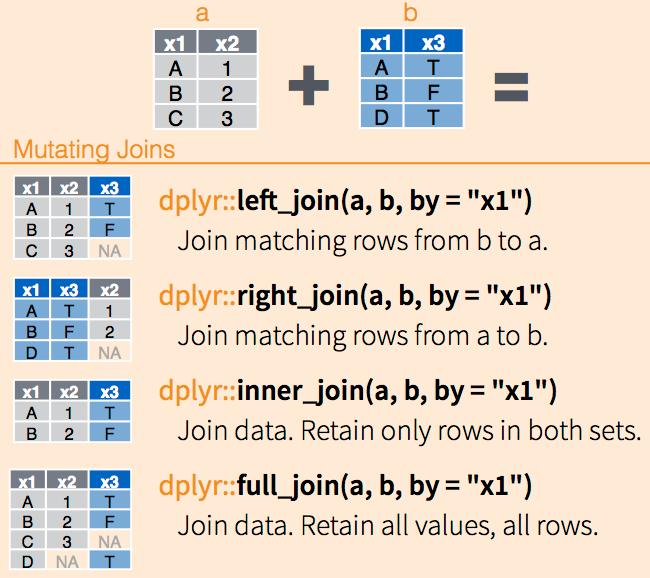

On fera surtout du dplyr dans la mesure où la syntaxe est plus simple à appréhender que le base R.
Prenons un example avec le jeu de données palmerpenguins.
data(package ='palmerpenguins')head(penguins)
species island bill_len bill_dep flipper_len body_mass sex year
1 Adelie Torgersen 39.1 18.7 181 3750 male 2007
2 Adelie Torgersen 39.5 17.4 186 3800 female 2007
3 Adelie Torgersen 40.3 18.0 195 3250 female 2007
4 Adelie Torgersen NA NA NA NA <NA> 2007
5 Adelie Torgersen 36.7 19.3 193 3450 female 2007
6 Adelie Torgersen 39.3 20.6 190 3650 male 2007
Il contient des informations sur trois espèces de manchots observées dans l’archipel de Palmer en Antarctique : Adelie, Chinstrap et Gentoo.
5.1 Manipulation de Data Frames
Assurez-vous de bien comprendre la structure de données d’un Data Frame avant de lire cette section (cf.Section 3.3).
5.1.1 Lire et écrire des Data Frames
Pour lire des DF à partir de fichiers csv1, on utilise la fonction de R base read.csv() dont l’équivalent en tydiverse est la fonction read_csv() du package readr. Je vous conseil d’utiliser la fonction readr::read_csv() car elle plus optimiser que la première.
1 On peut obtenir des DF à partir de fichiers autre que csv. Je me concentre sur ce format car il s’agit du plus courant. Si vous voulez lire des données à partir d’un fichier xls/xlsw vous pouvez utiliser le package read_excel. Je ne vous le conseil pas car les fichiers excel sont souvent très mal mis en forme en plus de contenir des feuilles. Il vaut mieux en extraire des csv propres.
Le format csv
Le format csv est un des formats les plus utilisé pour stocker des données tabulaires en data science. csv signifie Comma Separated Values (comma signifie virgule). Donc, dans la majorité des cas, un fichier csv sera de la forme :
var_1,var_2
12,0.9
2,0.25
4,0.78
En Europe, on utilise souvent la virgule pour représenter le séparateur décimal. Le séparateur de valeurs du fichier csv devient alors le ;. Le fichier devient alors :
var_1;var_2
12;0,9
2;0,25
4;0,78
Vous trouvez aussi des fichiers csv séparé par des tabulations (on parle de tsv. C’est surtout le cas pour les fichiers contenants du texte long car la virgule et le point virgule peuvent se rencontrer dans le texte.
Attention
Un fichier csv ne doit jamais avoir des informations avant la première ligne qui indique le nom des colonnes. Par exemple, le fichier suivant ne sera pas lu correctement.
Fichier écrit le 2025/05/02.
vars_1 : longueur (cm)
vars_2 : poid (g)
var_1;var_2
12;0,9
2;0,25
4;0,78
Cela veut dire qu’un fichier csv ne doit contenir que les données et jamais les métadonnées ou autres informations. Bien évidemment, si vous écrivez des données et que vous voulez les partager il faut toujours écrire les métadonnées, mais vous les écrirez dans un fichier séparé.
Avant de charger un fichier csv, il faut connaître le format employé : quel séparateur de valeur et quel séparateur de décimal est employé. Pour cela, il suffit d’ouvrir d’inspecter le fichier. Vous pouvez tout simplement essayer de l’ouvrir sous R et regarder le résultat. Sinon, vous pouvez ouvrir le fichier dans un logiciel externe (par exemple avec le notepad comme les csv sont des fichiers textuelles brutes).
Rows: 90 Columns: 115
── Column specification ────────────────────────────────────────────────────────
Delimiter: ","
chr (4): Libellé commune ou ARM, TRIRIS, Libellé de l'IRIS, Type d'IRIS
dbl (111): IRIS, Région, Département, Unité urbaine, Commune ou ARM, Grand q...
ℹ Use `spec()` to retrieve the full column specification for this data.
ℹ Specify the column types or set `show_col_types = FALSE` to quiet this message.
La fonction readr::read_csv() renvoie directement des informations sur la classe des colonnes. Cela vous permet de voir rapidement si elles sont bien interprétées.
Pour écrire un fichiercsv, vous pouvez utisez la fonction readr::write_csv(). Elle prend un data.frame en entrée et le chemin vers le fichier de destination. Je vous conseil d’utiliser la fonction avec les arguments par défaut, donc avec un séparateur virgule et un séparateur de décimale point. De cette façon, vous aurez toujours le format de csv et vous vous y retrouverez plus facilement.
Quand on travail avec des données spatiales vectorielles, ce qui est le cas dans ce cours, on utilise une variante spatiale du Data frame qui est un objet sf issu du package sf.
Avec sf, on peut lire tous les types de fichiers spatiaux vectoriels (par-ex, shapefile, geopackage, etc.). On utilise la fonction read_sf().
# Lecture d'un geopackagepath <-"data/src/iris_29.gpkg"iris <- sf::read_sf(path)class(iris)
[1] "sf" "tbl_df" "tbl" "data.frame"
Si vous voulez lire un shapefile, vous indiquerez le chemin du fichier .shp, sf fera le lien avec les autres fichiers.
On écrit des données spatiales à partir d’un objet sf avec la fonction write_sf(). La fonction “devine” le format attendu à partir de l’extension que vous donnez au fichier :
# Écriture d'un fichier geopackagepath <-"data/res/output.gpkg"sf::write_sf(sf_res, path)
5.1.2 Un framework pour la manipulation de données : dplyr
dplyr est un framework du tidyverse en R conçu pour faciliter la manipulation de données de manière claire, cohérente et efficace. Il repose sur une syntaxe intuitive et un petit ensemble de verbes cohérents qui correspondent aux opérations les plus courantes en analyse de données, comme :
select() pour choisir des colonnes,
filter() pour filtrer les lignes,
mutate() pour créer ou modifier des variables,
summarise() pour résumer les données,
arrange() pour trier les observations,
et group_by() pour travailler par groupes.
Ces verbes peuvent être reliés les uns aux autres par un pipe (|> ou %>%). Ce dernier prend le résultat de la fonction précédente comme tableau d’enttrée. Par exemple :
bill_len bill_dep flipper_len sex year
1 39.1 18.7 181 male 2007
2 39.5 17.4 186 female 2007
3 40.3 18.0 195 female 2007
4 NA NA NA <NA> 2007
5 36.7 19.3 193 female 2007
6 39.3 20.6 190 male 2007
On peut employer une expression de sélection pour choisir des variables par rapport à une condition. Par exemple, si on veut sélectionner toutes les variables dont le nom se termine par une chaine de caractère précise, on peut utiliser la fonction ends_with() dans la fonction select() :
bill_len flipper_len
1 39.1 181
2 39.5 186
3 40.3 195
4 NA NA
5 36.7 193
6 39.3 190
Plus d’examples
Si on a une idée précise des variables que l’on veut sélectionner, on peut utiliser un vecteur de contenant les noms des variables et utiliser la fonction all_of() :
Plutôt que d’écrire par-dessus la variable bill_len, on peut vouloir créer une autre variable pour enregistrer la modification. On écrit simplement le nom de la nouvelle variable à gauche du = :
[1] 0.01042667 0.01039474 0.01240000 NA 0.01063768 0.01076712
On peut modifier de façon conditionnelle nos variables. Par exemple, si on veut arrondir uniquement la variable bill_len pour les espèces Adelie alors, on peut utiliser la fonction ifelse() :
Quand on a plus d’une condition à vérifier, on privilégiera la fonction case_when() :
mutated <-mutate( penguins,geo_code =case_when( island =="Biscoe"~"North", island =="Torgersen"~"Midlle",TRUE~"South"# quand les deux premières ne sont pas vérifiées ))
Si on souhaite modifier un ensemble de variables répondant à un ou des caractères communs, on peut utiliser la fonction across(). Par exemple, si on veut arrondir toutes les variables numériques, on écrira :
species island bill_len bill_dep flipper_len body_mass sex year
1 Adelie Torgersen 39 19 181 3750 male 2007
2 Adelie Torgersen 40 17 186 3800 female 2007
3 Adelie Torgersen 40 18 195 3250 female 2007
4 Adelie Torgersen NA NA NA NA <NA> 2007
5 Adelie Torgersen 37 19 193 3450 female 2007
6 Adelie Torgersen 39 21 190 3650 male 2007
Il arrive que l’on souhaite modifier des variables ou en créer de nouvelles par groupe. Par exemple, on peut vouloir normaliser bill_len par la moyenne de body_mass par espèce. Dans ce cadre, on utilisera la fonction group_by() qui permet d’effectuer des opérations par groupe.
species island bill_len bill_dep flipper_len body_mass sex year
1 Adelie Torgersen 39.1 18.7 181 3750 male 2007
2 Adelie Torgersen 39.5 17.4 186 3800 female 2007
3 Adelie Torgersen 40.3 18.0 195 3250 female 2007
4 Adelie Torgersen NA NA NA NA <NA> 2007
5 Adelie Torgersen 36.7 19.3 193 3450 female 2007
6 Adelie Torgersen 39.3 20.6 190 3650 male 2007
5.1.4 Aggrégation de données
L’agrégation consiste à regrouper des observations selon une ou plusieurs variables (catégories, dates, régions, etc.) afin de calculer des indicateurs synthétiques (moyenne, total, écart-type, etc.) pour chaque groupe. C’est ce qui vous faites sur excel quand vous créez un tableau croisé dynamique.
En traitement et analyse de données, il s’agit d’une des opérations les plus courantes.
5.1.4.1 Aggrégation de l’ensemble d’un jeu de données
# On utilise le jeu de données palmerpenguinsdata(package ='palmerpenguins')head(penguins)
species island bill_len bill_dep flipper_len body_mass sex year
1 Adelie Torgersen 39.1 18.7 181 3750 male 2007
2 Adelie Torgersen 39.5 17.4 186 3800 female 2007
3 Adelie Torgersen 40.3 18.0 195 3250 female 2007
4 Adelie Torgersen NA NA NA NA <NA> 2007
5 Adelie Torgersen 36.7 19.3 193 3450 female 2007
6 Adelie Torgersen 39.3 20.6 190 3650 male 2007
penguins <- tidyr::drop_na(penguins)
Imaginons que l’on souhaite calculer la moyenne pour la variable bill_len et la variable flipper_len et conserver le résultat dans un data.frame. La solution de base serait :
Maintenant, si on voulait calculer la moyenne pour tous les variables numériques, il faudrait réécrire quatre fois la même ligne. Ce n’est pas efficient. En R base, on utiliserait une boucle pour pallier ces redondances. dplyr a été conçu pour faciliter l’écriture dans ces cas là. Pour résumer un jeu de données on utilise la fonction summarise(). Pour obtenir le même résultat que précédemment, on écrira :
Jusque là, ça ne nous avance pas à grand chose, si ce n’est que l’on plus obligé d’utiliser les $ pour accéder aux variables. Là où ça devient intéressant, c’est bien quand on a beaucoup de variables à résumer. Dans ce cas, on peut sélectionner les variables à résumer en utilisant la fonction across() qui permet prend une condition à vérifier et une opération à effectuer sur les variables retenues. Par exemple, si comme précédemment on souhaite calculer la moyenne pour tous les variables numériques, on écrira :
Une seul ligne de code permet de faire cela. Et si on souhaite également calculer d’autres statistiques ? C’est aussi possible ! Par exemple, si on souhaite également calculer la médiane et l’écart-type :
summarise(penguins, across(# Uniquement sur les variables numériques sauf la variable yearwhere(is.numeric) &!year,# Quelles fonctions appliquer.fn =list(mean = mean, median = median, sd = sd),# Quelles noms de variables renvoyer.names ="{.col}_{.fn}"# .col est le nom de la var. et .fn le nom de la function))
Très bien, mais cela ne s’applique que pour un jeu de données entier. Comment faire si l’on souhaite calculer ces statistiques pour des groupes ?
5.1.4.2 Aggrégation par groupe
Pour aggréger des données par groupe en utilisant dplyr il suffit d’employer la fonction group_by() avec summarise(). Le reste du code ne change pas. Dans group_by(), on indique la ou les variables de regroupement. Par exemple, pour calculer la moyenne pour toutes les variables numériques sauf year par espèces et par îles :
En R base, pour effectuer une aggrégation par groupe on utilisera la fonction aggregate(). Par exemple, pour calculer la moyenne de toutes les variables numériques dans iris
aggregate( penguins[, sapply(penguins, is.numeric)], # seule les variables numeriquesby =list(Species = penguins$species), # la variable qui contient les groupesFUN = mean # La fonction)
Pour faire des jointures, on s’appuira sur le package dplyr et ses fonctions *_join() (c.f. doc). Ces dernières permettent une approche intuitive des jointures, mimant le comportement des jointures en SQL.

Join in dplyr
Imaginons que nous disposons de deux jeux de données. Le premier contient le code postal et le nom de commune française. Le deuxième recèle la population et le code postal. On souhaite joindre les deux données pour disposer au sein d’un même tableau le code postal, le nom des communes et leur population.
Pour effectuer une jointure, il faut disposer d’une variable commune entre les deux tableaux. Dans notre cas, il s’agit de la variable code. On peut alors effectuer quatre jointure différentes :
library(dplyr)left_join(dt1, dt2, by ="code") # garde toutes les lignes de dt1
code commune pop
1 29120 Pont-L'abbé 140993
2 29200 Brest 8403
3 29600 Morlaix 15220
4 29160 Crozon NA
right_join(dt1, dt2, by ="code") # garde toutes les lignes de dt2
code commune pop
1 29120 Pont-L'abbé 140993
2 29200 Brest 8403
3 29600 Morlaix 15220
4 29880 <NA> 6719
inner_join(dt1, dt2, by ="code") # garde uniquement les codes communs
code commune pop
1 29120 Pont-L'abbé 140993
2 29200 Brest 8403
3 29600 Morlaix 15220
full_join(dt1, dt2, by ="code") # garde toutes les lignes des deux
code commune pop
1 29120 Pont-L'abbé 140993
2 29200 Brest 8403
3 29600 Morlaix 15220
4 29160 Crozon NA
5 29880 <NA> 6719
Au quotidien, on emploie le plus souvent le left_join().
Souvent, on dispose de la même variable dans deux jeux de données mais nommée différemment. Dans ce cas soit :
On renomme la variable dans un des tableaux puis on joint normalement ;
On change l’argument by par by = c("var_dt1" = "var_dt2").
base R
En base R, on utilise merge() avec différents paramètres pour obtenir le même résultat :
merge(dt1, dt2, by ="code", all.x =TRUE) # left join
code commune pop
1 29120 Pont-L'abbé 140993
2 29160 Crozon NA
3 29200 Brest 8403
4 29600 Morlaix 15220
merge(dt1, dt2, by ="code", all.y =TRUE) # right join
code commune pop
1 29120 Pont-L'abbé 140993
2 29200 Brest 8403
3 29600 Morlaix 15220
4 29880 <NA> 6719
merge(dt1, dt2, by ="code") # inner join (par défaut)
code commune pop
1 29120 Pont-L'abbé 140993
2 29200 Brest 8403
3 29600 Morlaix 15220
merge(dt1, dt2, by ="code", all =TRUE) # full join
code commune pop
1 29120 Pont-L'abbé 140993
2 29160 Crozon NA
3 29200 Brest 8403
4 29600 Morlaix 15220
5 29880 <NA> 6719
5.2 Manipulation de matrice
Bien que les data.frame (et objets associés) soit les objets les plus courants que vous aurez à traiter, il arrive que l’on se retrouve à traiter des matrices (matrix). Ces objets, plus simples dans leur structure que les Dataframe, sont souvent utilisés pour optimiser des traitements.
5.2.1 Les bases des matrices sous R
5.2.1.1 Création de matrices
On peut créer une matrice avec la fonction matrix() :
# Création d'une matrice 3x3 remplie par colonnesm1 <-matrix(1:9, nrow =3, ncol =3)m1
[,1] [,2] [,3]
[1,] 1 4 7
[2,] 2 5 8
[3,] 3 6 9
# On peut aussi remplir par lignesm2 <-matrix(1:9, nrow =3, byrow =TRUE)m2
[,1] [,2] [,3]
[1,] 1 2 3
[2,] 4 5 6
[3,] 7 8 9
5.2.1.2 Accès aux éléments
On peut accéder aux éléments de la matrice de la même façon que dans un dataframe en utilisant l’indice des lignes et des colonnes.
m1[2, 3] # Élément de la 2e ligne, 3e colonne
[1] 8
m1[1, ] # 1ère ligne complète
[1] 1 4 7
m1[, 2] # 2e colonne complète
[1] 4 5 6
Si les lignes et/ou les colonnes sont nommées, on peut également utiliser les noms pour retrouver les valeurs.
m1[1, ] %o% m1[2, ] # produit extérieur (outer product)
c1 c2 c3
c1 2 5 8
c2 8 20 32
c3 14 35 56
Il est également possible de calculer des statistiques pour les lignes et les colonnes :
rowSums(m1)
r1 r2 r3
12 15 18
rowMeans(m1)
r1 r2 r3
4 5 6
colSums(m1)
c1 c2 c3
6 15 24
colMeans(m1)
c1 c2 c3
2 5 8
5.2.1.4 Autres opérations
t(m1) # Transposée
r1 r2 r3
c1 1 2 3
c2 4 5 6
c3 7 8 9
det(m1) # Déterminant
[1] 0
diag(m1) # Diagonale
[1] 1 5 9
5.3 Traitement de chaîne de caractères
Références :
Le chapitre les chaînes de caractères de guide-R (Larmarange, 2025)
5.3.1 Chercher/remplacer
Pour chercher remplacer dans une chaîne de caractère (variable ou vecteur), on utiliser la fonction de base gsub() ou la fonction stringr::str_replace().
# Avec une chaîne de caractèrex <-"Une phras mal orthographié"x <-gsub(x = x, "phras", "phrase")gsub(x = x, "orthographié", "orthographiée")
[1] "Une phrase mal orthographiée"
# Avec un vecteurx <-c("Puie", "pluie", "ORag_", "Orage")x <-gsub(x = x, "Puie", "pluie")gsub(x = x, "ORag_", "orage")
[1] "pluie" "pluie" "orage" "Orage"
Tout l’intérêt de passer par un langage de programmation est de pouvoir automatiser au maximum le remplacement des chaînes de caractère. Pour cela, on utilise les expressions régulières (on dira plutôt regex). Ces dernières permettent d’identifier efficacement des schémas dans des chaînes de caractères. Imaginons que l’on souhaite supprimer tous les espaces qui sont placés au début d’une chaîne de caractère dans un vecteur :
x <-c("Michel Legrand", "Glenn Gould", " Michel Legrand", " Glenn Gould")# Quatre valeur unique alors qu'on souhaite en avoir 2.unique(x)
Les expressions régulières ne sont pas forcément facile à manipuler mais quand on commence à les prendre en main on gagne un temps fou. Vous pouvez vous renseigner ici.
Quand vous commencez à maitriser un peu les regex
5.3.2 Concaténation
Pour concaténer deux chaînes de caractères :
library(glue)str1 <-"un chêne"str2 <-"vouvre"# Méthode 1: paste() et paste0()conc1 <-paste(str1, str2) # espace par défaut entre les deux chaînesconc2 <-paste0(str1, " ", str2)# Méthode 2: sprintf()conc3 <-sprintf("%s %s", str1, str2)# Méthode 3: glue()conc4 <-glue("{str1} {str2}")print(conc4)
un chêne vouvre
all(c(conc1, conc2, conc3) == conc4)
[1] TRUE
glue() est la méthode la plus moderne, elle est à privilégier.
5.3.3 Tableau de contingence
Pour calculer un tableau de contingence sous R, on utilise la fonction table() avec les deux vecteurs que l’on souhaite analyser.